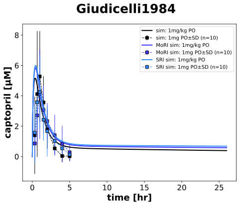
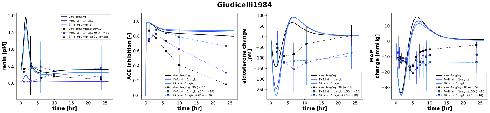

|  |
|  |
../../../../experiments/studies/giudicelli1984.py
"""Giudicelli1984 experiment"""
from typing import Dict
from sbmlsim.data import DataSet, load_pkdb_dataframe
from sbmlsim.fit import FitMapping, FitData
from sbmlutils.console import console
from pkdb_models.models.captopril.experiments.base_experiment import (
CaptoprilSimulationExperiment,
)
from pkdb_models.models.captopril.experiments.metadata import Tissue, Route, Dosing, Health, Fasting, \
CaptoprilMappingMetaData, PKPDData
from sbmlsim.plot import Axis, Figure
from sbmlsim.simulation import Timecourse, TimecourseSim
from pkdb_models.models.captopril.helpers import run_experiments
import numpy as np
class Giudicelli1984(CaptoprilSimulationExperiment):
"""Simulation experiment for Giudicelli1984.
Influence of chronic renal failure on captopril pharmacokinetics and clinical and biological effects
in hypertensive patients.
-low lipid meal after 3 hr and 8 hr
-sd checked
"""
route = "PO"
dose = 1 # mg/kg
groups = []
n_figure = []
bodyweights = {
"NRF": 63.5,
"MoRI": 69.1,
"SRI": 68.5,
}
MAP = {
"NRF": (184+2*113)/3,
"MoRI": (188+2*118)/3,
"SRI": (183+2*115)/3,
}
sbp = {
"NRF": 184, # mmHg
"MoRI": 188,
"SRI": 183
}
dbp = {
"NRF": 113, # mmHg
"SRI": 118,
"MoRI": 115,
}
ren = {
"NRF": 18.51, # pg/ml
"MoRI": 2.04,
"SRI": 14.57
}
ald = {
"NRF": 65.0, # ng/l
"MoRI": 110,
"SRI": 124
}
colors = {
"NRF": CaptoprilSimulationExperiment.renal_colors["Control"],
"MoRI": CaptoprilSimulationExperiment.renal_colors["Moderate renal impairment"],
"SRI": CaptoprilSimulationExperiment.renal_colors["Severe renal impairment"],
}
renal_function = {
"NRF": 84.82 / 84.82, # eGFR from creatinine
"MoRI": 26.60 / 84.82, # eGFR from creatinine
"SRI": 7.96 / 84.82, # eGFR from creatinine
}
groups_unique = renal_function.keys()
elements_unique = ["MAP (change absolute)", "change absolute_aldosterone", "captopril", "absolute_renin", "ACE inhibition"]
def datasets(self) -> Dict[str, DataSet]:
dsets = {}
self.reset_state()
self.groups = []
for fig_id in ["Fig1", "Fig2", "Fig3", "Fig4"]:
df = load_pkdb_dataframe(f"{self.sid}_{fig_id}", data_path=self.data_path)
for label, df_label in df.groupby("label", sort=False):
dset = DataSet.from_df(df_label, self.ureg)
for element in self.elements_unique:
if element in label:
self.data_collection(element=element, label=label)
dset.unit_conversion(
self.data_type, self.conversion_factor
)
if "_NRF" in label:
self.groups.append("NRF")
elif "_MoRI" in label:
self.groups.append("MoRI")
else:
self.groups.append("SRI")
dsets[f"{label}"] = dset
break
# console.print(dsets.keys())
# console.print(dsets)
return dsets
def simulations(self) -> Dict[str, TimecourseSim]:
Q_ = self.Q_
tcsims = {}
for group in self.groups_unique:
tcsims[f"cap_{self.route}_{self.dose}_{group}"] = TimecourseSim(
Timecourse(
start=0,
end=26 * 60, # minutes
steps=400,
changes={
**self.default_changes(),
f"{self.route}DOSE_cap": Q_(self.dose, "mg/kg")
* Q_(self.bodyweights[group], "kg"),
"BW": Q_(self.bodyweights[group], "kg"),
# "MAP": Q_(self.MAP[group], "mmHg"),
"KI__f_renal_function": Q_(
self.renal_function[group], "dimensionless"
),
f"ren_ref": Q_(self.ren[group], "pg/ml") / self.Mr.ren,
f"[ren]": Q_(self.ren[group], "pg/ml") / self.Mr.ren,
f"ald_ref": Q_(self.ald[group], "ng/l") / self.Mr.ald,
f"[ald]": Q_(self.ald[group], "ng/l") / self.Mr.ald,
f"SBP_ref": Q_(self.sbp[group], "mmHg"),
f"DBP_ref": Q_(self.dbp[group], "mmHg"),
},
)
)
return tcsims
def fit_mappings(self) -> Dict[str, FitMapping]:
mappings = {}
for k, label in enumerate(self.clabels):
group = self.groups[k]
mappings[f"fm_cap{self.route}_{self.dose}_plasma_acute_fasting_{group}"] = (
FitMapping(
self,
reference=FitData(
self,
dataset=label,
xid="time",
yid="mean",
yid_sd="mean_sd",
count="count",
),
observable=FitData(
self,
task=f"task_cap_{self.route}_{self.dose}_{group}",
xid="time",
yid=self.yids[k],
),
metadata=CaptoprilMappingMetaData(
tissue=Tissue.PLASMA,
route=Route.PO,
dosing=Dosing.SINGLE,
health=(
Health.HEALTHY
if group == "NRF"
else Health.RENAL_IMPAIRMENT
),
fasting=Fasting.FASTING,
data=PKPDData.PK if "captopril" in label else PKPDData.PD
),
)
)
# console.print(mappings)
return mappings
def figures(self) -> Dict[str, Figure]:
return {
**self.pk_figures(),
**self.pd_figures(),
}
def pk_figures(self) -> Figure:
k = 0
fig = Figure(
experiment=self,
sid="PK",
name=f"{self.__class__.__name__}",
height=self.panel_height,
width=self.panel_width,
)
plots = fig.create_plots(
xaxis=Axis(self.labels["time"], unit=self.units["time"]), legend=True
)
plots[0].set_yaxis(self.labels["[Cve_cap]"], unit=self.units["[Cve_cap]"])
for kl, label in enumerate(self.clabels):
if "captopril" in label:
group = self.groups[k]
# simulation
plots[0].add_data(
task=f"task_cap_{self.route}_{self.dose}_{group}",
xid="time",
yid="[Cve_cap]",
label=f"sim: {self.dose}mg/kg {self.route}" if "NRF" in group else f"{group} sim: {self.dose}mg/kg {self.route}",
color=self.colors[group],
)
# dataset
plots[0].add_data(
dataset=label,
xid="time",
yid="mean",
yid_sd="mean_sd",
count="count",
label=f"sim: {self.dose}mg {self.route}" if "NRF" in group else f"{group} sim: {self.dose}mg {self.route}",
color=self.colors[group],
)
k += 1
return {
fig.sid: fig,
}
def pd_figures(self) -> Dict[str, Figure]:
fig = Figure(
experiment=self,
sid="PD",
name=f"{self.__class__.__name__}",
num_rows=1,
num_cols=4,
height=self.panel_height,
width=self.panel_width * 4,
)
plots = fig.create_plots(
xaxis=Axis(self.labels["time"], unit=self.units["time"]), legend=True
)
for ky_pd, yids_pd in enumerate(["[ren]", "ace_inhibition", "ald_change", "MAP_change"]):
plots[ky_pd].set_yaxis(self.labels[yids_pd], unit=self.units[yids_pd])
# simulation
for group in self.groups_unique:
plots[ky_pd].add_data(
task=f"task_cap_{self.route}_{self.dose}_{group}",
xid="time",
yid=yids_pd,
label=f"sim: {self.dose}mg/kg" if "NRF" in group else f"{group} sim: {self.dose}mg/kg",
color=self.colors[group],
)
for ky, yid in enumerate(self.yids):
if yid == yids_pd:
group = self.groups[ky]
# dataset
plots[ky_pd].add_data(
dataset=self.clabels[ky],
xid="time",
yid="mean",
yid_sd="mean_sd",
count="count",
label=f"sim: {self.dose}mg/kg" if "NRF" in group else f"{group} sim: {self.dose}mg/kg",
color=self.colors[group],
)
return {
fig.sid: fig,
}
if __name__ == "__main__":
run_experiments(Giudicelli1984, output_dir=Giudicelli1984.__name__)
{kind=link}
{kind=link}